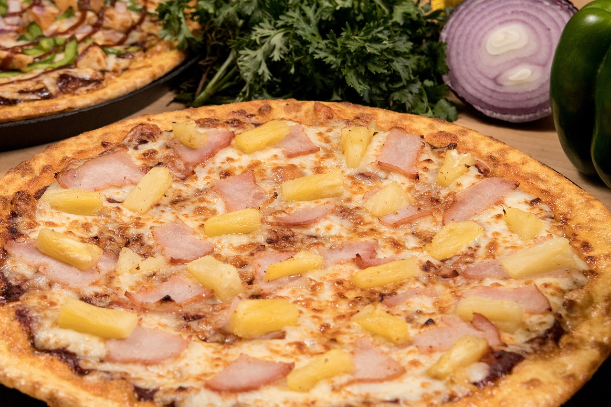

Hawaiian Pizza Recipe
Home

Description
Hawaiian pizza is a delicious fusion of sweet and savory flavors, featuring a golden crust topped with tangy tomato sauce, melted mozzarella cheese, savory ham, and juicy pineapple chunks. This recipe brings together the best of classic pizza and tropical flair, creating a dish that's both satisfying and refreshingly different. The contrast between the saltiness of the ham and the sweetness of the pineapple creates a bold, crave-worthy flavor profile that has made Hawaiian pizza a favorite for generations.
Whether you make the dough from scratch or use a pre-made crust, this pizza comes together easily and bakes in just 10–12 minutes for a perfectly crispy base and bubbly, golden cheese. Optional toppings like red onion, bacon, or chili flakes can be added for extra depth and heat, making it customizable to your taste. Perfect for a casual weeknight dinner or a fun pizza night, this Hawaiian pizza recipe is a great way to enjoy something a little tropical—no passport required.
Ingredients
-
Dough
- 2.25 tsp Active dry yeast
- 0.75 cup warm water
- 1.5 cups all-purpose flour
- 1 tsp sugar
- 0.5 tsp salt
- 1 tbsp olive oil
-
Toppings
- 0.5 cup pizza/marinara sauce
- 1.5 cups shredded mozzarella cheese
- 0.5 cup cooked ham
- 0.5 cup pineapple chunks
- Optional: red chili flakes, sliced red onions, bacon
Steps
- Make the Dough
- In a bowl, combine yeast, warm water, and sugar. Let sit for 5-10 minutes until foamy
- Stir in flour, salt, and olive oil. Knead on a floured surface for 5-7 minutes until smooth.
- Place in a lightly oiled bowl, cover, and let rise for 1 hour (or until doubled in size).
- Preheat Oven
- Preheat your oven to 475 F or 245 C. If using a pizza stone, heat it in the oven as well.
- Shape the Dough
- Roll out the dough into a 12-inch circle. Place it on parchment paper or a floured pizza peel.
- Assemble the Pizza
- Spread pizza sauce evenly over the dough.
- Add shredded mozzarella cheese.
- Top with ham and pineapple chunks.
- Optional: Add sliced red onions or red chili flakes.
- Bake
- Transfer the pizza to the oven (or onto the hot stone).
- Bake for 10-12 minutes, or until the crust is golden and cheese is bubbly and slightly browned.
- Serve
- Let the pizza rest for 2 minutes before slicing. Garnish with fresh basil or a drizzle of olive oil if desired.